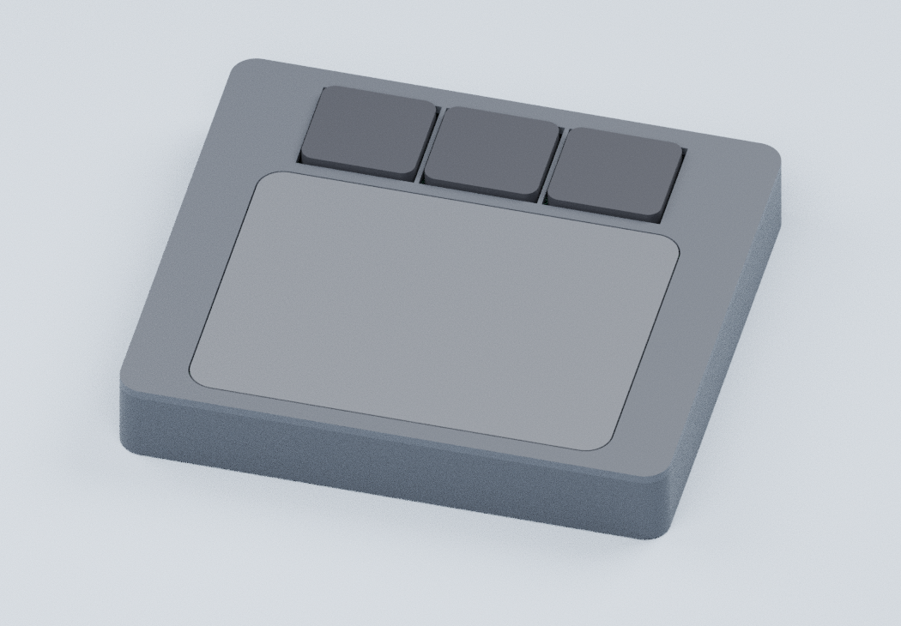

キット確認と採寸
同梱品を確認。キーの静止・底打ち高さ、裏面の突出、FFCの接点面、USB-C位置を測る。
採寸表
「今買える」は未所持なら購入できる汎用品です。販売店リンクは検索で開きます。最新の在庫・価格・送料は注文画面で確認してください。候補型番は「設計待ち」に表示します。
同梱品を確認。キーの静止・底打ち高さ、裏面の突出、FFCの接点面、USB-C位置を測る。
採寸表公式ネットリストは照合済み。無通電でFFCの1番・全ピン導通・短絡を確認し、給電と論理条件を確定した後に電流制限付きでI²Cを検証。
検証条件3キー、ポインター、スクロールをBLE HIDで試す。ネイティブのマルチタッチとショートカットによる操作を個別に確認する。
消費電流から電池容量を決め、保護と充電条件を照合。端子とスイッチの高さ、アンテナ、FFC、導光部品をCADで確認。
外装CADKiCadで配線、ERC・DRCを実施。3D試作でキーの動き、挿抜、熱、無線を確認し、STEP・寸法図・Gerber・実装BOMを確定する。
3キー基板BLE設定仕様に合わせて、キー割り当て・RGB・電池表示を実装。試作品の受入後に筐体と基板を手配し、完成品で充電と再接続を確認する。